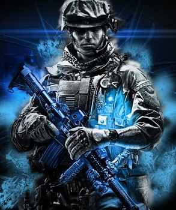

Hallo mijn naam is Decock Aurelio, geboren op 19 september 1995 te Kortrijk. Hedendaags woon ik nog steeds in het gezellige stadje Harelbeke. Ik heb 2 zussen, 1 half zus en 1 echte zus. Mijn halfzus heeft een leefijd van 21 en mijn echte zus is er 10. Samen zijn we opgevoed bij onze grootouders. Sinds 1 januari heb ik een relatie met Daphne Scherpereel. En dit is mijn examenopdracht van webdesign.
Hallo ik ben Aurelio, ik ben 18 jaar en ik woon in Harelbeke. Ik ben opgevoed bij mijn grootouders. Mijn hobby's zijn gamen, en uitgaan met vrienden maar daar kom ik later op terug. Ik ben ingeschreven in de Arteveldehogeschool om af te studeren als webdesigner. Ik heb al een beetje voorkennis maar ik heb zeker nog veel te leren. De voorkennis heb ik te danken aan mijn vooropleiding in het Technisch Atheneum in Heule. Ik heb enkele scholen gedaan in het secundair, zoals:
Mijn favoritie muziek-genre is rock,metal, ... Kortom, alles wat met een goeie gitaar,bas en drum in combinatie met ruwe en clean vocals te maken heeft. Een uitschieter daarvan is de band 'Asking Alexandria', sinds vorig jaar ben ik samen met een klasgenoot Roë Callberson naar hun optreden gaan kijken, hij was fan en ik was niet echt een grote liefhebber van dat genre. Maar na hun optreden heb ik me bedacht en is mijn sympathie voor de band beginnen groeien. Daarna heb ik ze nogmaals bezocht op Graspop Metal Meeting 2013. Maar ik ben niet enkel fan van Asking Alexandria natuurlijk, ook bands zoals Slipknot, Battlecross, Parkway Drive en vele anderen kunnen mij bekoren.
Zoals ik al zei: Mijn hobby's zijn gamen, uitgaan met vrienden, festivals,... Mijn vriendengroep is nogal een hechte groep, dus daarom doen we altijd alles samen, zowel gamen als uitgaan.
Gamen is voor mij echt een passie, ik game wanneer ik kan, verslaafd ben ik niet. Werken voor school komt natuurlijk op de eerste plaats. Mijn favorite games zijn:
Als ik uitga met mijn vrienden doen we het liefst van al festivals. Zoals vorig jaar heb ik naar Graspop Metal Meeting geweest. Ook Reggae Geel was een optie maar dat hadden we het jaar ervoor al gedaan. Festivals zijn een echte descipline van teambuilding. De band groeit enorm wanneer we samen eens iets anders doen dan gamen. Maar meestal kan gamen wel een gespreksonderwerp zijn om die festivals.
 Voordelen |
Nadelen |
| Maakt websites overzichtelijker | coderen gebeurt in kleine letters |
| Aangenamer om sites te bezoeken | Moeilijk aan te leren |
| Responsive webdesign | Veel rekenkundig werk |